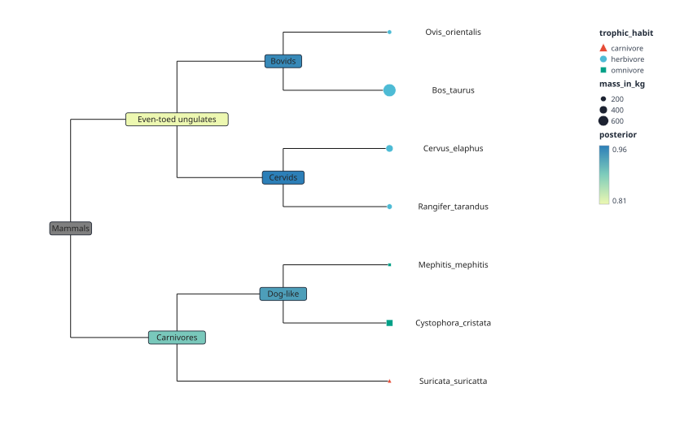
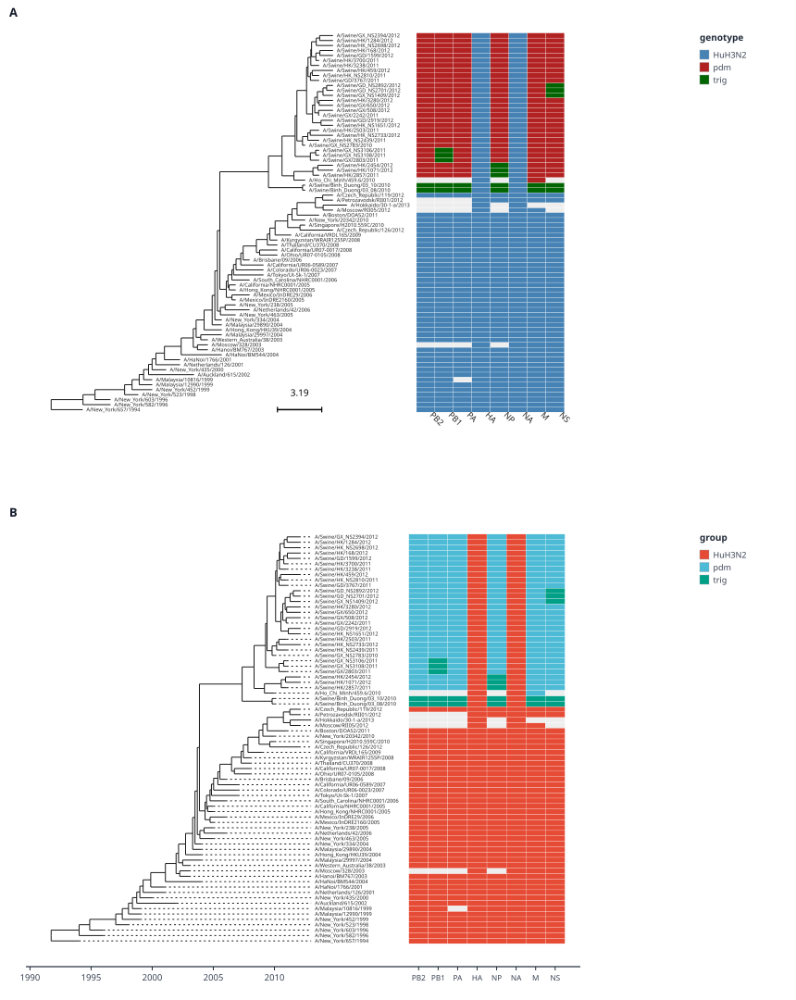
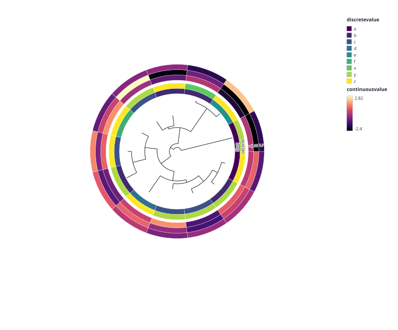

7. Plotting Tree with Data
Modern phylogenomics integrates heterogeneous traits—tip measurements, internal node support values, SNP alleles, sequence alignments, and arbitrary ggplot2 panels—directly alongside tree tips with synchronized coordinate ordering.
7.1 Attaching External Tables via %<+%
Attach external tip and internal-node metadata frames via %<+% (or Python %) so discrete shapes, continuous fills, and point sizes map seamlessly across multiple layers.

▶ Show / Hide Python Code read_treeread_table%<+%geom_tiplab
from ggtree import (
read_tree, read_table, system_file, ggtree, aes, xlim,
geom_tiplab, geom_tippoint, geom_label, scale_size_continuous,
scale_fill_gradientn,
)
tree = read_tree(system_file("extdata", "TDbook", "tree_boots.nwk"))
df_tip_data = read_table(system_file("extdata", "TDbook", "df_tip_data.tsv"), sep="\t", header=True)
df_inode_data = read_table(system_file("extdata", "TDbook", "df_inode_data.tsv"), sep="\t", header=True)
p = (
ggtree(tree) % df_tip_data
+ xlim(-0.45, 4.2)
+ geom_tiplab(offset=0.6, hjust=0.5)
+ geom_tippoint(aes(shape="trophic_habit", color="trophic_habit", size="mass_in_kg"))
+ scale_size_continuous(range=(3, 10))
)
p2 = (
p % df_inode_data
+ geom_label(aes(label="vernacularName.y", fill="posterior"), na_rm=True)
+ scale_fill_gradientn(colors=["#EDF8B1", "#7FCDBB", "#2C7FB8"])
)
p2
7.2 Aligning Panels with Tree Tips via geom_facet()
geom_facet() aligns external datasets in horizontal panels paired row-for-row with tree tips using layers such as SNP geom_point(shape='|') and horizontal geom_col trait bars.

▶ Show / Hide Python Code read_treeread_tableDataFrameggtree
from ggtree import (
read_tree, read_table, DataFrame, system_file, ggtree, aes,
geom_tippoint, geom_facet, geom_point, geom_col, theme_tree2,
)
tree = read_tree(system_file("extdata", "TDbook", "tree_nwk.nwk"))
df_info = read_table(system_file("extdata", "TDbook", "df_info.tsv"), sep="\t", header=True)
df_alleles = read_table(system_file("extdata", "TDbook", "df_alleles.tsv"), sep="\t", header=True)
df_bar_data = read_table(system_file("extdata", "TDbook", "df_bar_data.tsv"), sep="\t", header=True)
recs = df_alleles.to_records()
cols = df_alleles.columns
strains = [str(recs[0][c]) for c in cols]
tip_set = set(tree.tip_label)
c_ref = cols[0]
snp_id, snp_pos = [], []
for r_idx, pos_str in enumerate(df_alleles.rownames[1:], 1):
row = recs[r_idx]
ref_base = row[c_ref]
if ref_base == "?":
continue
pos_val = int(pos_str)
for c, strain in zip(cols[1:], strains[1:]):
val = row[c]
if strain in tip_set and val != "?" and val != ref_base:
snp_id.append(strain)
snp_pos.append(pos_val)
snp_data = DataFrame({"id": snp_id, "pos": snp_pos})
p = (
ggtree(tree) % df_info
+ geom_tippoint(aes(color="location"), size=1.8)
+ geom_facet(panel="SNP", data=snp_data, geom=geom_point, mapping=aes(x="pos", color="location"), shape="|")
+ geom_facet(panel="Trait", data=df_bar_data, geom=geom_col, mapping=aes(x="dummy_bar_value", color="location", fill="location"), orientation="y", width=0.6)
+ theme_tree2(legend_position=(0.05, 0.85))
)
p
7.3 Matrix Heatmaps and Multiple Fill Scales
gheatmap() aligns discrete or continuous matrices to rectangular or circular trees, while new_scale_fill() cleanly resets fill scales between concentric heatmaps.

▶ Show / Hide Python Code read_beastread_tablegheatmapscale_fill_manual
from ggtree import (
read_beast, read_table, system_file, ggtree, geom_treescale,
geom_tiplab, gheatmap, scale_fill_manual, scale_x_ggtree,
theme_tree2, plot_list,
)
beast_tree = read_beast(system_file("extdata", "MCC_FluA_H3.tree"))
genotype = read_table(system_file("extdata", "Genotype.txt"), sep="\t", header=True, row_names=0)
p = ggtree(beast_tree, mrsd="2013-01-01") + geom_treescale(x=2008, y=1, offset=2) + geom_tiplab(size=2)
p1 = (
gheatmap(p, genotype, offset=5, width=0.5, font_size=3, colnames_angle=-45, hjust=0)
+ scale_fill_manual(
breaks=["HuH3N2", "pdm", "trig"],
values=["steelblue", "firebrick", "darkgreen"],
name="genotype",
)
)
p_b = ggtree(beast_tree, mrsd="2013-01-01") + geom_tiplab(size=2, align=True, linesize=0.5) + theme_tree2()
p2 = gheatmap(p_b, genotype, offset=8, width=0.6, colnames=False) + scale_x_ggtree()
plot_list(p1, p2, ncol=1, tag_levels="A")

▶ Show / Hide Python Code read_treegheatmapnew_scale_fillscale_fill_viridis_d
from ggtree import (
set_seed, read_tree, DataFrame, sample, rnorm, system_file,
ggtree, gheatmap, new_scale_fill, scale_fill_viridis_d, scale_fill_viridis_c,
)
set_seed(2019)
tr = read_tree(system_file("extdata", "sample.nwk"))
ntip = len(tr.tip_label)
df = DataFrame(
{
"first": sample(list("abcdef"), ntip, replace=True),
"second": sample(list("xyz"), ntip, replace=True),
},
rownames=tr.tip_label,
)
df2 = DataFrame(
{
"A": rnorm(ntip),
"B": rnorm(ntip),
"C": rnorm(ntip),
},
rownames=tr.tip_label,
)
circ = ggtree(tr, layout="circular")
p1 = (
gheatmap(circ, df, offset=0.8, width=0.2, colnames_angle=95, colnames_offset_y=0.25)
+ scale_fill_viridis_d(option="D", name="discrete\nvalue")
)
p2 = (
gheatmap(p1 + new_scale_fill(), df2, offset=15, width=0.3, colnames_angle=90, colnames_offset_y=0.25)
+ scale_fill_viridis_c(option="A", name="continuous\nvalue")
)
p2
7.4 Visualizing Multiple Sequence Alignments via msaplot()
msaplot() reads FASTA sequences via read_fasta() and maps residue windows cleanly onto both rectangular and circular phylogenetic layouts.

▶ Show / Hide Python Code read_treemsaplotggtreegeom_tiplab
from ggtree import read_tree, system_file, ggtree, geom_tiplab, msaplot, xlim, plot_list
tree = read_tree(system_file("extdata", "TDbook", "tree_seq_nwk.nwk"))
fasta = system_file("extdata", "TDbook", "AA_sequence.fas")
p1 = msaplot(ggtree(tree) + geom_tiplab(size=2.3) + xlim(None, 26), fasta, offset=6.4, width=2)
p2 = msaplot(
ggtree(tree, layout="circular") + geom_tiplab(align=True, offset=3.2, size=1.9) + xlim(None, 16),
fasta,
offset=0.4,
width=2.4,
window=(120, 200),
)
plot_list(p1, p2, ncol=2, tag_levels="A")
7.5 Tree-Aligned Composite Plots (aplot)
Unlike naive plot_grid() stacking, composite methods insert_left() and insert_right() automatically reorder external ggplot() heatmaps and bar charts by tree tip y-coordinates.

▶ Show / Hide Python Code rtreeggplotgeom_tilegeom_col
from ggtree import (
set_seed, rtree, sample, rnorm, rep, DataFrame, ggplot, ggtree, aes,
geom_tiplab, geom_tile, geom_col, geom_text, coord_flip, scale_fill_viridis_c,
theme_minimal, theme_tree2, theme, xlab, ylab, plot_grid, plot_list,
)
set_seed(20191031)
x = rtree(10)
d1 = DataFrame({"id": sample(x.tip_label, 5) + ["A"], "val": list(range(1, 7))})
g = ggtree(x) + geom_tiplab(align=True)
p1 = (
ggplot(d1, aes("id", "val"))
+ geom_col(aes(fill="id"))
+ geom_text(aes(label="id"), hjust=-0.1)
+ coord_flip()
+ theme_tree2()
+ theme(legend_position="none")
)
d2 = DataFrame({
"id": rep(x.tip_label, 5),
"category": rep(["A", "B", "C", "D", "E"], each=10),
"value": rnorm(50, mean=0.0, sd=2.5),
})
p2 = (
ggplot(d2, aes(x="category", y="id"))
+ geom_tile(aes(fill="value"))
+ scale_fill_viridis_c()
+ theme_minimal()
+ xlab(None)
+ ylab(None)
)
pa = plot_grid(g, p2, p1, ncol=3)
pb = p2.insert_left(g).insert_right(p1, width=0.5)
plot_list(pa, pb, ncol=1, tag_levels="A")